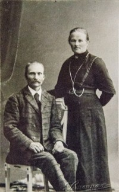

Helga Mathilde Antonsdatter
K, #1258, f. 18 juni 1876, d. 6 august 1959
Foreldre
| Datter | Lina Henriette Skaret (f. 24 desember 1894, d. 1931) |
| Datter | Amanda Jonetta Skaret (f. 18 august 1896, d. 13 mai 1986) |
| Sønn | Aksel Ludvig Skaret+ (f. 26 juni 1898, d. 1 september 1960) |
| Datter | Jenny Konstanse Skaret+ (f. 14 januar 1900, d. 4 april 1988) |
| Sønn | Arne Nordal Skaret+ (f. 23 januar 1902, d. 18 juni 1980) |
| Datter | Astrid Mathilde Skaret+ (f. 28 april 1903, d. 29 november 1975) |
| Datter | Oddny Norence Skaret+ (f. 8 mai 1905, d. 24 april 1999) |
| Sønn | Arvid Engelbert Skaret+ (f. 3 juni 1907, d. 6 januar 1959) |
| Sønn | Olav Nordahl Skaret+ (f. 4 mai 1909, d. 21 august 1976) |
| Sønn | Janvar Neumann Skaret+ (f. 24 oktober 1911, d. 14 september 1986) |
| Sønn | Alf Henry Skaret (f. 16 mars 1913, d. 1915) |
| Sønn | Arthur Henry Skaret+ (f. 1 september 1914, d. 28 juni 1976) |
| Sønn | Agnar Eilif Skaret (f. 14 mai 1917, d. 19 mars 2005) |
| Datter | Dagmar Margot Skaret+ (f. 20 oktober 1918, d. 20 april 1945) |
| Datter | Jorid Kanuthe Skaret+ (f. 22 februar 1920, d. 30 november 1997) |

Laurits Skaret - Helga f. Holmen
Biografi
Helga Mathilde Antonsdatter ble født den 18 juni 1876 på/i Spjøtneset, Namsos, Nord-Trøndelag. Hun giftet seg med
Laurits Lorentsen Skaret den 19 august 1894 på/i Fosnes, Nord-Trøndelag.

Hun døde den 6 august 1959 på/i Namsos, Nord-Trøndelag. Hun ble gravlagt den 12 august 1959 på/i Namsos kirkegård, Namsos, Nord-Trøndelag.
Helga Mathilde Antonsdatter was also known as Helga Mathilde Skaret. Hun ble døpt den 10 september 1876 på/i Vemundvik kirke, Namsos, Nord-Trøndelag.
| Sist redigert |
16 august 2024 22:08:06 |
Lina Henriette Skaret
K, #1259, f. 24 desember 1894, d. 1931
Foreldre
Biografi
Lina Henriette Skaret ble født den 24 desember 1894 på/i Vemundvik, Namsos, Nord-Trøndelag. Hun giftet seg med
Sigurd Efskin. Hun døde i 1931.
Lina Henriette Skaret was also known as Lina Henriette Efskin.
| Sist redigert |
18 desember 2012 00:00:00 |
| Slektskap | Søskenbarn 2 ganger forskjøvet til Lovise Julie Eggan |
Amanda Jonetta Skaret
K, #1260, f. 18 august 1896, d. 13 mai 1986
Foreldre
Biografi
Amanda Jonetta Skaret ble født den 18 august 1896 på/i Vemundvik, Namsos, Nord-Trøndelag. Hun døde den 13 mai 1986 på/i Namsos, Nord-Trøndelag. Hun ble gravlagt den 21 mai 1986 på/i Namsos kirkegård, Namsos, Nord-Trøndelag.
| Sist redigert |
8 oktober 2010 00:00:00 |
| Slektskap | Søskenbarn 2 ganger forskjøvet til Lovise Julie Eggan |
Aksel Ludvig Skaret
M, #1261, f. 26 juni 1898, d. 1 september 1960
Foreldre
Biografi
Aksel Ludvig Skaret ble født den 26 juni 1898 på/i Vemundvik, Namsos, Nord-Trøndelag. Han giftet seg med
Hildur Aarli. Han døde den 1 september 1960 på/i Nord-Trøndelag. Han ble gravlagt den 7 september 1960 på/i Namsos kirkegård, Namsos, Nord-Trøndelag.
| Sist redigert |
3 oktober 2010 00:00:00 |
| Slektskap | Søskenbarn 2 ganger forskjøvet til Lovise Julie Eggan |
Jenny Konstanse Skaret
K, #1262, f. 14 januar 1900, d. 4 april 1988
Foreldre
Biografi
Jenny Konstanse Skaret ble født den 14 januar 1900 på/i Vemundvik, Namsos, Nord-Trøndelag. Hun giftet seg med
Cato Andreas Johansen. Hun døde den 4 april 1988 på/i Namsos, Nord-Trøndelag. Hun ble gravlagt den 8 april 1988 på/i Namsos kirkegård, Namsos, Nord-Trøndelag.
Jenny Konstanse Skaret was also known as Jenny Konstanse Johansen.
| Sist redigert |
3 oktober 2010 00:00:00 |
| Slektskap | Søskenbarn 2 ganger forskjøvet til Lovise Julie Eggan |
Arne Nordal Skaret
M, #1263, f. 23 januar 1902, d. 18 juni 1980
Foreldre
Biografi
Arne Nordal Skaret ble født den 23 januar 1902 på/i Vemundvik, Namsos, Nord-Trøndelag. Han giftet seg med
Gerda Helmine Nilsdatter. Han døde den 18 juni 1980 på/i Namsos, Nord-Trøndelag. Han ble gravlagt den 24 juni 1980 på/i Namsos kirkegård, Namsos, Nord-Trøndelag.
Arne Nordal Skaret was also known as Arne Nordahl Skaret.
| Sist redigert |
10 mars 2025 14:59:58 |
| Slektskap | Søskenbarn 2 ganger forskjøvet til Lovise Julie Eggan |
Astrid Mathilde Skaret
K, #1264, f. 28 april 1903, d. 29 november 1975
Foreldre
Biografi
Astrid Mathilde Skaret ble født den 28 april 1903 på/i Fosnes, Nord-Trøndelag. Hun giftet seg med
Johannes Edmund Brikselli. Hun døde den 29 november 1975 på/i Namsos, Nord-Trøndelag. Hun ble gravlagt den 4 desember 1975 på/i Namsos kirkegård, Namsos, Nord-Trøndelag.
Astrid Mathilde Skaret was also known as Astrid Mathilde Brikselli.
| Sist redigert |
3 oktober 2010 00:00:00 |
| Slektskap | Søskenbarn 2 ganger forskjøvet til Lovise Julie Eggan |
Oddny Norence Skaret
K, #1265, f. 8 mai 1905, d. 24 april 1999
Foreldre
Familie: Erik O. Langseth (f. 15 februar 1885, d. 18 mars 1979)
| Datter | Anne Hallfrid Langseth+ |
Biografi
Oddny Norence Skaret ble født den 8 mai 1905. Hun giftet seg med
Erik O. Langseth i 1945. Hun døde den 24 april 1999 på/i Løkken, Meldal, Sør-Trøndelag. Hun ble gravlagt den 5 mai 1999 på/i Meldal kirkegård, Meldal, Sør-Trøndelag.
| Sist redigert |
3 oktober 2010 00:00:00 |
| Slektskap | Søskenbarn 2 ganger forskjøvet til Lovise Julie Eggan |
Arvid Engelbert Skaret
M, #1266, f. 3 juni 1907, d. 6 januar 1959
Foreldre
Biografi
Arvid Engelbert Skaret ble født den 3 juni 1907 på/i Fosnes, Nord-Trøndelag. Han giftet seg med
Anna Johanne Jakobsen den 27 desember 1929 på/i Sogneprestkontoret, Namsos, Nord-Trøndelag. Han døde den 6 januar 1959 på/i Namsos, Nord-Trøndelag. Han ble gravlagt den 10 januar 1959 på/i Namsos kirkegård, Namsos, Nord-Trøndelag.
| Sist redigert |
27 mai 2025 23:57:11 |
| Slektskap | Søskenbarn 2 ganger forskjøvet til Lovise Julie Eggan |
Olav Nordahl Skaret
M, #1267, f. 4 mai 1909, d. 21 august 1976
Foreldre
Familie 3: Gunda Johanne Evensen (f. 24 mai 1922, d. 25 september 1985)
| Sønn | Roger Skaret+ |
| Sønn | Andor Skaret+ |
Biografi
Olav Nordahl Skaret ble født den 4 mai 1909. Han giftet seg med
Jofrid Oline Johansen. Han giftet seg med
Gunda Johanne Evensen. Han døde den 21 august 1976. Han ble gravlagt den 26 august 1976 på/i Namsos kirkegård, Namsos, Nord-Trøndelag.
| Sist redigert |
3 oktober 2010 00:00:00 |
| Slektskap | Søskenbarn 2 ganger forskjøvet til Lovise Julie Eggan |
Janvar Neumann Skaret
M, #1268, f. 24 oktober 1911, d. 14 september 1986
Foreldre
Biografi
Janvar Neumann Skaret ble født den 24 oktober 1911. Han giftet seg med
Anna Marie Lauvsnes. Han døde den 14 september 1986 på/i Namsos, Nord-Trøndelag. Han ble gravlagt den 19 september 1986 på/i Høknes gravlund, Namsos, Nord-Trøndelag.
Janvar Neumann Skaret eide Bruraskaret 59/8/, Breksillan, Fosnes, Nord-Trøndelag.
| Sist redigert |
4 mai 2021 00:00:00 |
| Slektskap | Søskenbarn 2 ganger forskjøvet til Lovise Julie Eggan |
Alf Henry Skaret
M, #1269, f. 16 mars 1913, d. 1915
Foreldre
Biografi
Alf Henry Skaret ble født den 16 mars 1913 på/i Nord-Trøndelag. Han døde i 1915 på/i Nord-Trøndelag.
| Sist redigert |
3 oktober 2010 00:00:00 |
| Slektskap | Søskenbarn 2 ganger forskjøvet til Lovise Julie Eggan |
Arthur Henry Skaret
M, #1270, f. 1 september 1914, d. 28 juni 1976
Foreldre
Familie: Rosa Hovdan (f. 18 april 1920, d. 14 januar 2013)
| Sønn | Torbjørn Skaret+ |
| Datter | Eli Skaret+ (f. 16 mars 1943, d. 3 november 2012) |
| Sønn | Knut Skaret+ (f. 8 desember 1948, d. 23 september 1996) |
| Datter | Ruth Skaret+ |
| Sønn | Per Kristian Skaret+ |
| Datter | Mette Lore Skaret+ |
Biografi
Arthur Henry Skaret ble født den 1 september 1914 på/i Nord-Trøndelag. Han giftet seg med
Rosa Hovdan. Han døde den 28 juni 1976. Han ble gravlagt den 2 november 1976 på/i Namsos kirkegård, Namsos, Nord-Trøndelag.
| Sist redigert |
3 oktober 2010 00:00:00 |
| Slektskap | Søskenbarn 2 ganger forskjøvet til Lovise Julie Eggan |
Agnar Eilif Skaret
M, #1271, f. 14 mai 1917, d. 19 mars 2005
Foreldre
Biografi
Agnar Eilif Skaret ble født den 14 mai 1917. Han giftet seg med
Borghild Lyseggen i 1945. Han døde den 19 mars 2005 på/i Sykehuset Namsos, Namsos, Nord-Trøndelag. Han ble gravlagt den 23 mars 2006 på/i Vemundvik kirke, Namsos, Nord-Trøndelag.
| Sist redigert |
3 oktober 2010 00:00:00 |
| Slektskap | Søskenbarn 2 ganger forskjøvet til Lovise Julie Eggan |
Dagmar Margot Skaret
K, #1272, f. 20 oktober 1918, d. 20 april 1945
Foreldre
Biografi
Dagmar Margot Skaret ble født den 20 oktober 1918. Hun giftet seg med Erik Johannesen. Hun døde den 20 april 1945. Hun ble gravlagt den 27 april 1945 på/i Namsos kirkegård, Namsos, Nord-Trøndelag.
Dagmar Margot Skaret was also known as Dagmar Margot Johannesen.
| Sist redigert |
3 oktober 2010 00:00:00 |
| Slektskap | Søskenbarn 2 ganger forskjøvet til Lovise Julie Eggan |
Jorid Kanuthe Skaret
K, #1273, f. 22 februar 1920, d. 30 november 1997
Foreldre
Familie: Olav Indermo (f. 5 september 1918, d. 16 september 2002)
Biografi
Jorid Kanuthe Skaret ble født den 22 februar 1920. Hun giftet seg med
Olav Indermo i 1942. Hun døde den 30 november 1997. Hun ble gravlagt på/i Salsnes kirkegård, Fosnes, Nord-Trøndelag.
Jorid Kanuthe Skaret was also known as Jorid Kanutte Indermo.
| Sist redigert |
25 juli 2023 14:40:20 |
| Slektskap | Søskenbarn 2 ganger forskjøvet til Lovise Julie Eggan |
Sigurd Efskin
M, #1274, f. 14 mai 1897, d. 11 desember 1994
Foreldre
Biografi
Sigurd Efskin ble født den 14 mai 1897 på/i Sagelvmoen 6/7, Lødding; Vemundvik, Namsos, Nord-Trøndelag. Han giftet seg med
Lina Henriette Skaret. Han giftet seg med
Valborg Annette Johansen i 1938. Han døde den 11 desember 1994 på/i Namsos, Nord-Trøndelag. Han ble gravlagt den 16 desember 1994 på/i Vemundvik kirkegård, Namsos, Nord-Trøndelag.
Sigurd Efskin eide i 1948 Sagelvmoen 6/7, Lødding; Vemundvik, Namsos, Nord-Trøndelag.
| Sist redigert |
18 desember 2012 00:00:00 |
Hildur Aarli
K, #1275, f. 30 september 1902, d. 1946
Foreldre
Biografi
Hildur Aarli ble født den 30 september 1902 på/i Gravvik, Nærøy, Nord-Trøndelag. Hun giftet seg med
Aksel Ludvig Skaret. Hun døde i 1946 på/i Namsos, Nord-Trøndelag. Hun ble gravlagt den 8 februar 1946 på/i Namsos kirkegård, Namsos, Nord-Trøndelag.
Hildur Aarli was also known as Hildur Skaret.
| Sist redigert |
3 oktober 2010 00:00:00 |
{kind=link}